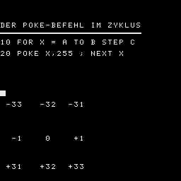

***BOERSE*** ist ein Boerse-
Handel-Spiel. Ziel ist es
moeglichst viel Kapital zu er-
wirtschaften. Dies wird
erreicht durch das errichten
von Aktiengesellschaften.
Durch den Ankauf von Aktien der
Gesellscafften,die diesen Markt
besitzen. Im Laufe des Spieles
steigt der Wert der Aktien in
dem Wert,indem die gesell-
schaften groesser werden kleiner
eGesellschaft koennen in Groessere
umgewandelt werden,wobei
das Kapital der kleineren
Firma in das der Groesseren,
wie nachstehend erlaeutert,
ueberfuehrt wird.
In jeder Spielrunde bietet der
computer dem Spieler Plaetze an.
Der Spieler antwortet, nachdem
er sich auf dem Aktienmarkt
umgesehen hat,welchen Platz er
nehmen moechte.
Jeder Spieler kann dabei einen
der vier grundsaetzlichen Zuege
machen:
1-Einen unabhaengigen Aussen-
posten gruenden.
Wenn ein Spieler einen Platz
besetzt,der nicht an einen
Stern, einen anderen Aussen-
posten oder Aktiengesel.
grenzt,wird dieser Platz mit
'+' gekennzeichnet.Der
kann dann weiter handeln,wie
oben beschrieben .
2-Eine bestehende Aktiengesel.
erweitern.Wird ein Platz be-
legt,der an eine einzige
Firma grenzt,so wird dieser
Platz in diese Firma auf-
genommen und durch den ersten
Buchstaben der Gesellschaft
markiert.Falls Sterne oder
Aussenposten diesen Platz
beruehrt werden sie ebenfalls
in die Firma aufgennomen.
Jedes Feld neben einen Stern
erhoeht den Marktwert der
Gesellschaft um 600.-je Aktie.
Jeder Aussenposten bringt
weitere 100.- je Aktie.
3-Eine neue Aktiengesel. gruen-
den.Belegt ein Spieler einen
Platz,der an einen Stern oder
einen unabhaengigen Aussen-
posten grenzt,aber keine
bestehende Firma beruehrt,
wird eine neue Aktiengesel.
eroeffnet. Der Spieler be-
kommt automatisch 5 Aktien
der neuen Gesellschaft als
Anerkennung.Er kann dann wei-
terhin Aktien aller aktiven
Gesellschaften handeln.
4-ZWEI bestehende Gesellschaften
werden vermischt.Wird ein Pla-
tz direkt neben bestehenden
Firmen belegt, werden diese
vermischt. Dabei uebernimmt
die groessere die kleinere
Firma
Das Kapital der vermischten
Firmen wird dem Wert ent-
sprechend,der belegten Plae-
tzen und Sternen,neu festge-
legt. Die Anteile der Spieler
an der aufgeloesten Firma
werden im Verhaeltnis 2:1
durch Aktien der neuen Firmen
ersetzt.Weiterhin bekommt je-
der Spieler eine Barverguetung
entsprechend der prozentualen
Anteile der aufgeloesten Firma
Der Computer zaelt jedem Spie-
ler eine Dividende (5% des Wer-
tes der Aktien in seinen Be-
sitz) und ermoeglicht den
Handel mit Aktien aller besteh-
enden Gesellschaften.
Uebersteigt der Marktwert einer
Aktie 3000.- ,so wird diese im
Verhaeltnis 2:1 geteilt.
Gewinner ist der Spieler,mit
dem groessten Geldbestand am
Schluss !